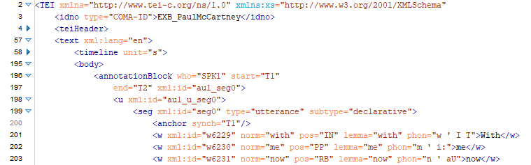

Language resource management — Transcription of spoken language

Bienvenue sur la page d'accueil de Transcription+ !
Ce site fournit des informations sur le standard ISO 24624:2016 Gestion des ressources linguistiques — Transcription de la langue parlée, une norme publiée en 2016 pour la représentation numérique des transcriptions de données linguistiques audiovisuelles. La norme s'appuie sur les lignes directrices de la Text Encoding Initiative (TEI). Elle a été appliquée avec succès dans divers projets de recherche et infrastructures de données de recherche.
Le projet Transcription+ est une coopération entre l' Université de Duisburg-Essen et le consortium Text+ de l' Infrastructure nationale allemande de données de recherche NFDI. L'Académie des sciences et des lettres de Hambourg, le Centre pour la gestion durable des données de recherche de l'Université de Hambourg et le Centre pour les corpus linguistiques de Hambourg (HZSK) sont des partenaires du consortium Text+ qui soutiennent Transcription+.
L'objectif du projet est d'améliorer la documentation et les outils de prise en charge de la norme. À cette fin, la documentation existante sera révisée, complétée et publiée ici. Des ressources telles que les schémas XML, les feuilles de style XSLT et d'autres codes seront rassemblées à partir de différentes sources, harmonisées, documentées et regroupées dans un dépôt GitHub. Une version améliorée du corpus de démonstration multilingue EXMARaLDA sera mise à disposition au format standard. Le corpus de démonstration sera également accessible via une instance de la plateforme ZuMult. Une version étendue des services web TEILicht, permettant de convertir, normaliser, annoter ou visualiser des documents de transcription au format ISO/TEI, sera développée.
Le projet a démarré en janvier 2026 et s'achèvera en septembre 2026. Ce site web est en cours de construction. Cliquez sur l'une des fiches ci-dessous pour en savoir plus sur l'état d'avancement des tâches correspondantes. N'hésitez pas à me contacter pour toute question ou suggestion.